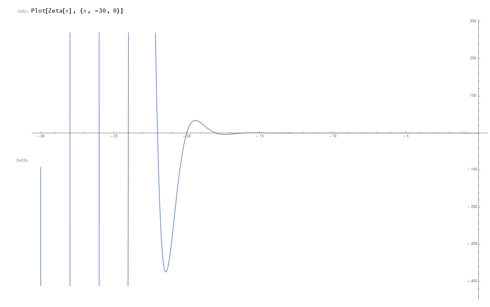
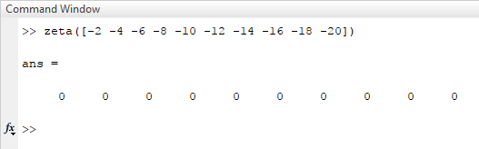

Convergence of Divergent Series
Table of Contents
\listoffigures \listoftables
\newpage
"Divergent series are an invention of the devil and it is shameful to base on them any demonstration whatsoever."Abel – N.H. Abel. 1826
Mathematics is the science of skilful operations, which are dealing with the logic of shape, quantity and rearrangement. Mathematics is using its core principles and rules to solve problems and get a reasonable answer. In my opinion, mathematics will soon run out of interesting theories if all new theories will formulate in terms of invented concept, which appear in axioms. This exploration is about finding finite values, limits for famous divergent series and later analytically extending Euler-Riemann's zeta function to find a limit for any divergent series that can be formed by Euler- Riemann's zeta function.
1 Introduction
I tend to think that in order to create innovative theories, mathematics as a
whole should be pushed to its boundaries and limits, new axioms should be
invented and unexplored topics should be studied. With this kind of approach, I
got acquainted with the divergent series. It all has started in my former school
when I was in 7 th grade and we have started the topic of geometric series. When
my teacher asked a question – "What will be the infinite sum of one, a half, a
quarter and so on?" Initially, I thought the answer was infinity, because at
that time it made sense to me, an infinite amount of values equals to always
growing sum until it reaches infinity. When the teacher told us the answer is
two, I was quite shocked by the fact that it has an end and all these values are
converging to one finite value. I remember how I was walking around and trying
to understand, why this series does not go beyond that finite value? It was
logical to me that if it keeps summing every element, every element should
contribute to the goal of getting closer to that value and there should be one
element, which after summing up will go beyond two. I started reading and
researching additional material to understand the fundamental logic of
convergent series. When I finally understood why it works, I found a new topic,
that struck my mind – "Divergent series" and not the series in general, but how
the most famous mathematicians: Leonhard Euler, Bernhard Riemann and Srinivasa
Ramanujan proved that these series are in nature convergent too. Now it all made
a perfect sense.
In this exploration I will explore the most famous and well-known divergent series, proving with multiple ways that they have a finite value that they are converging too and at the end, I will show how it is possible to find limit almost for any divergent series.
2 Grandi's Series
This is probably one of the famous and trickiest-at-the-beginning divergent series. It looks like this:
\begin{equation} 1-1+1-1+1-1+...=\sum_{n=1}^{\infty} (-1)^{n-1} \end{equation}Strange, isn't? For the first time, it has been reported by mathematician Guido Grandi in 1703. He noticed that inserting parenthesis into the series will return a different result, but these parentheses are being inserted in a way, that it should not affect the series value. Let me show you:
\begin{align*} &\text{Parenthesis before even elements: } 1-(1-1)-(1-1)-(1-1)\cdots&=1\\ &\text{Parenthesis before odd elements: } (1-1)+(1-1)+(1-1)+(1\cdots&=1\\ \end{align*}Grandi explained this phenomenon by saying that – "Mettendo in modo diverso le parentesi nell'espressione \(1-1+1-1+\cdots\) io posso, volendo, ottenere 0 o 1. Ma allora l'idea della creazione ex nihilo è perfettamente plausibile."Mettendo Which translates from Italian to English - "By putting parentheses into the expression \(1-1+1-1+\cdots\) in different ways, I can, if I want, obtain 0 or 1. But then the idea of the creation ex nihilo is perfectly plausible." Where "ex nihilo" means "out of nothing".Exnihilo As a true mathematician, Leonhard Euler did not think that the value is either 0 or 1, he thought that the true limit was \(1/2\). He proved it through the geometric reasoning of the "Witch of Agnesi". We will prove it arithmetically.
2.1 First Solution
2.2 Second Solution
We can formulate the second solution by using the infinite formula for converging geometric series - \(\frac{a}{1-r}\), where \(a\) is the first element of the series and \(r\) is the common ratio. Generally, the formula is applicable only of absolute value of the common ration is less than one, \(|r| < 1\) but it is also applicable in our case, where \(r = - 1\). In this case, let us denote Grandi's series as S, and
\begin{equation*} S=\frac{1}{1-(-1)}=\frac{1}{1+1}=\frac{1}{2} \end{equation*}This proves how the series converges to \(1/2\). This is the solution that I thought about, when I imagined the Grandi's series as a geometric series.
2.3 Third Solution
Third solution can by achieved by using partial sums. So that the series's sum will be:
| 1 | -1 | +1 | -1 | +1 | -1 | +1 | \(\cdots\) |
|---|---|---|---|---|---|---|---|
| 1 | 0 | 1 | 0 | 1 | 0 | 1 | \(\cdots\) |
By averaging the sums, we can conclude that:
| 1 | \((1+0)/2\) | \((1+0+1)/3\) | \((1+0+1+0)/4\) | \((1+0+1+0+1)/5\) |
|---|---|---|---|---|
| 1 | \(1/2\) | \(2/3\) | \(1/4\) | \(3/5\) |
Therefore, we can evaluate that with each even indexes the series equal to \(1/2\) and with odd indexes, the partial sums converge to \(1/2+1/2n\), where n is the amount of elements summed up. If the amount of indexes tends to infinity then \(1/2n\) will be infinitely small, resulting that the infinite partial sums will converge to \(1/2\).
3 Wolff's series (\(1-2+3-4+5-6+\cdots\))
This series is quite fascinating too. When Guido Grandi has published his work
on his infinite series that we explored above, famous mathematician Christian
Wolff doubted the logic of Grandi's series and because of that, he wrote a
letter to Gottfield Wilhelm Leibniz. After receiving a reply Wolff from
Leibniz, Wolff was so pleased with the solution that he wanted to extend the
series to \(1-2+3-4+5-6+\cdots\)
This series can be also represented like
\begin{equation*} \sum_{n=1}^\infty (-1)^{n+1}n \end{equation*}This series as goes, seems to tend to negativeinfinity, as the progression will look like this:
\begin{align*} 1, -1, 2, -2, 3, -3, 4, -4, 5, -5, 6, -6, \cdots \end{align*}
By analytical continuation and mathematical rules, we can find the limit of this
series. The simplest solution follows the rule of infinite geometric series and
derivation.
If we have a series
\begin{equation*} 1+x+x^2+x^3+x^4+x^5+x^6+\cdots \end{equation*}let us denote it as \(s\), where the absolute value of the common ration is less than 1: \(|x| < 1\), then we can find the sum using the formula of infinite convergent geometric series - \(\frac{1}{1-x}\) . It can be derived by using fundamental mathematical operations:
\begin{align*} 1+x+x^2+x^3+x^4+x^5+x^6\cdots&=1+x(1+x+x^2+x^3+x^4+x^5+\cdots)\\ s&=1+xs\\ s-xs&=1\\ s(1-x)&=1\\ \end{align*} \begin{equation} s=\frac{1}{1-x} \end{equation}It was applicable to the Grandi's series but in order to make it suitable for Wolff's series, we will derivate the equation from both parts, so we will get:
\begin{equation*} \frac{d}{dx}(1+x+x^2+x^3+x^4+x^5+x^6\cdots)=\frac{d}{dx}(\frac{1}{1-x}) \end{equation*}By applying basic differential methods on the left side and quotient rule on the right side of the equation, the equation will be:
\begin{equation*} 1+2x+3x^2+4x^3+5x^4+6x^5+\cdots=\frac{1}{(1-x)^2} \end{equation*}Now, if we will substitute \(x\) as -1, so \(x=-1\), on the left side we will get the Wolff's series and some finite value on the right side.
\begin{equation} 1-2+3-4+5-6+\cdots=\frac{1}{(1+1)^2}=\frac{1}{2^2}=\frac{1}{4} \label{Wolff} \end{equation}Generally, the infinite sum formula for geometric series is valid only when the absolute value of the common ratio is less than one, but in our case, it is applicable too.
4 \(1+2+3+4+5+\cdots\)
It is safe to say that this is a fascinating series with a fascinating result. \(1+2+3+\cdots\) is a particular case of Euler-Riemann zeta function, where the Euler-Riemann zeta function can be represented in the following way:
\begin{equation} \zeta(s)=\sum_{n=1}^{\infty} \frac{1}{n^s}=\frac{1}{1^s}+\frac{1}{2^s}+\frac{1}{3^s}+\frac{1}{4^s}+\frac{1}{5^s}+\cdots \label{zetaf} \end{equation}This function of a complex variable \(s\) that analytically continues from Dirichlet series, so our series from above can be written in terms of Euler-Riemann zeta function:
\begin{equation} \sum_{n=1}^{\infty} n \text{ or } \zeta(-1) \end{equation}
I will talk about Euler-Riemann zeta function more in the next part. Back to our
series. Interestingly enough, the finite value of this series is negative value
of one over twelve or mathematically speaking, \(-1/12\).
In this part, one solution with rearrangements and logic will be used, as the
other one will be explored in the next chapter- "Euler-Riemann Zeta
Function".
The first solution involves the series itself and the Wolff's series. So to start solving it, let us denote the series \(1+2+3+4+5+\cdots\) as \(s_1\) and the series \(1-2+3-4+5-6+7-\cdots\) as \(s_2\). So then we can write the following equation:
\begin{align*} s_1-s_2&=1+2+3+4+5+6+\cdots\\ &-(1-2+3-4+5-6+\cdots)=\\ &=0+4+0+8+0+16+\cdots=\\ &=4(1+2+3+4+5+\cdots)= \end{align*}Now we can rewrite the equation by substituting \(1+2+3+4+5+\cdots\) as \(s_1\) and \(s_2\) with the value from \ref{Wolff}
\begin{align*} s_1-s_2&=4s_1\\ -3s_1&=s_2\\ s_1&=-\frac{1}{12}\\ \end{align*}5 Euler-Riemann Zeta Function
I would like to talk more about Euler-Riemann zeta function. Euler-Riemann zeta function is a beautiful function in the world of complex numbers and later applied to real numbers. The notation of zeta Euler-Riemann function is \(\zeta(s)\), where \(s\) is some complex number and is defined only when the real part of ss is bigger than 1. From equation \ref{zetaf} we know the notation of Euler-Riemann zeta function
\begin{equation*} \zeta(s)=\sum_{n=1}^{\infty} \frac{1}{n^s}=\frac{1}{1^s}+\frac{1}{2^s}+\frac{1}{3^s}+ \frac{1}{4^s}+\frac{1}{5^s}+\cdots \end{equation*}
It is called Euler-Riemann because Euler was the first mathematician who made a
notable contribution to the function, but Euler was making his works on the
Euler-Riemann zeta function using real values as ss, insteas of complex. Almost
after a decade famous mathematician Bernhard Riemann has published his works
about Euler-Riemann zeta function by using complex number.
There are many solutions to this series that can be achieved by different
approaches and formulas. I will explore some solutions to it and then I will try
to find the functional equation of the Euler- Riemann zeta function and with
that, we can prove that almost any divergent series formed by Euler-Riemann zeta
converges and has a finite value. One of the "Millenium Prize Problems" is
called "Riemann Hypothesis", which says that the Euler-Riemann zeta function
returns zeros only at the negative even integers and complex numbers with real
part \(1/2\).
This math exploration is called "Convergence of Divergent Series" and we are not
going to explore Euler-Riemann zeta function, where \(s\), Euler-Riemann zeta
function's argument is a complex number. In this exploration I will research how
to find finite values and trivial zeros for divergent series, which are
particular cases of the Euler-Riemann zeta function, thus proving that almost
all divergent series formed by Euler-Riemann zeta function are quite
convergent.
In the last part of this exploration, I will show my way of presenting the Euler-Riemann zeta function in the form of a product, how to find convergent values for any zeta-function-formed divergent series and the connection of it with Bernoulli numbers.
5.1 Product notation
Firstly, we should know how to present the Euler-Riemann zeta function in the form of a product, so:
\begin{equation} \zeta(s)=\sum_{n=1}^{\infty} \frac{1}{n^s}=\prod_{p \text{ prime}}^{\infty} (1-p^{-s})^{-1} \end{equation}
When I introduced my exploration topic to my math teacher, he struck me with a
fact that the sum can be presented in the form of a product. So I have been
trying to experiment with the Euler- Riemann zeta function in different ways and
saw one easy way of transforming it.
We can divide every element of the Euler-Riemann zeta function by \(2^s\), so:
\begin{equation*} \frac{\zeta(s)}{2^s}= (\frac{1}{1^s}+\frac{1}{2^s}+\frac{1}{3^s}+ \frac{1}{4^s}+\frac{1}{5^s}+\cdots)\frac{1}{2^s}= \frac{1}{2^s}+\frac{1}{4^s}+\frac{1}{6^s}+ \frac{1}{8^s}+\frac{1}{10^s}+\cdots \end{equation*}Now, all denominators are multiples of two, so now we can subtract the series above from the Euler-Riemann zeta function in order to get new series, only with odd denominators, as subtraction excluded all denominators, which are multiples of 2.
\begin{equation*} \zeta(s)[1-\frac{1}{2^s}]=\frac{1}{1^s}+\frac{1}{3^s}+\frac{1}{5^s}+ \frac{1}{7^s}+\frac{1}{9^s}+\cdots \end{equation*}Now we have only odd denominators and we can repeat the same process and exclude all elements, which denominators are multiples of 3.
\begin{equation*} \frac{\zeta(s)}{3^s}[1-\frac{1}{2^s}] = (\frac{1}{1^s}+\frac{1}{3^s}+\frac{1}{5^s}+ \frac{1}{7^s}+\frac{1}{9^s}+\cdots)\frac{1}{3^s}=\frac{1}{3^s}+\frac{1}{9^s}+\frac{1}{15^s}+ \frac{1}{21^s}+\frac{1}{27^s}+\cdots \end{equation*} \begin{equation*} \zeta(s)[1-\frac{1}{2^s}][1-\frac{1}{3^s}] = \frac{1}{1^s}+\frac{1}{5^s}+\frac{1}{7^s}+ \frac{1}{11^s}+\frac{1}{13^s}+\cdots \end{equation*}We can repeat this process for an infinite amount of prime numbers, thus excluding all denominators, which are multiples of kth prime. After repeating it an indefinite amount of times, on the right side, only 1 will be left, as 1 is not a multiple of any prime number.
\begin{equation*} \zeta(s)[1-\frac{1}{2^s}][1-\frac{1}{3^s}][1-\frac{1}{5^s}]\cdots[1-\frac{1}{p_k^s}]\cdots=1 \end{equation*} \begin{equation*} \zeta(s)\prod_{p \text{ prime}}^{\infty} (1-\frac{1}{p^s})=1 \end{equation*} \begin{equation*} \zeta(s)=\frac{1}{\prod_{p \text{ prime}}^{\infty} (1-\frac{1}{p^s})}=\prod_{p \text{ prime}}^{\infty} \frac{1}{1-\frac{1}{p^s}}= \prod_{p \text{ prime}}^{\infty} (1-p^{-s})^{-1}=\sum_{n=1}^{\infty} n^{-s} \end{equation*}
After some rearranging, we can see how the Euler-Riemann zeta function can be
presented as sum and product. With knowledge of that, we can go further and find
a value for Euler-Riemann zeta function with every negative integer, thus
finding a finite value for any divergent series. We will need this identity to
find values for Euler-Riemann zeta function with negative odd integers.
From now on I will be using Wolfram Alpha and MATLAB to plot Euler-Riemann zeta
function and find values for arguments.
5.2 Trivial Zeros
Firstly, we will find "trivial zeros" for Euler-Riemann zeta function. "Trivial zeros" are all zeros, which are a result of function \(\zeta(-2n)\), where \(n\) is a non-negative integer. In order to find these zeros, we should know the Euler-Riemann zeta function's functional equation. Basically, the functional equation Func is an equation of the form \(f(x, y, \cdots ) = 0\), where \(f\) contains a finite number of independent variables, known function, and unknown functions which are to be solved for. I found the Euler-Riemann zeta function's functional equation in a fantastic book “Divergent Series” by G.H.Hardy Hardy In the function below, \(\Gamma\) is the gamma function, where \(\Gamma(n) = (n-1)!\)
\begin{equation} \zeta(s)=2^s\pi^{s-1}\sin(\frac{\pi s}{2})\Gamma(1-s)\zeta(1-s) \end{equation}Now, in order to prove that for any negative integer the Euler-Riemann zeta function will return zero, we should use an argument of \(-2n\), where \(n\) is a non-negative integer.
\begin{equation} \zeta(-2n)=2^{-2n}\pi^{-2n-1}\sin(-\pi n)\Gamma(1+2n)\zeta(1+2n) \end{equation}Subsequently, we can ignore all variables in the equation above, except \(\sin(-\pi n)\). As sine function is an even function, so then:
\begin{equation} sin(-\pi n)=-sin(\pi n) \end{equation}Referring to the simplest trigonometric rules, we know that sine function with an angle, which is a multiple of \(\pi\) will always return a zero. Now proceeding next we can conclude that:
\begin{equation*} \zeta(-2n)=-2^{-2n}\pi^{-2n-1}\sin(\pi n)\Gamma(1+2n)\zeta(1+2n)=0 \end{equation*}Thereafter we can bring examples of Euler-Riemann zeta function, where the argument will be a negative even integer, thus finding a finite value for these divergent series:
\begin{align*} \zeta(-2)=\sum_{n=1}^{\infty} n^2=1^2+2^2+3^2+4^2+5^2+...=1+4+9+16+25+\cdots&=0\\ \zeta(-4)=\sum_{n=1}^{\infty} n^4=1^4+2^4+3^4+4^4+5^4+\cdots=1+16+81+256+625+\cdots&=0 \end{align*} \begin{equation} \zeta(-2n)=\sum_{n=1}^{\infty} n^2n=1^2n+2^2n+3^2n+4^2n+5^2n+\cdots=0 \end{equation}In addition, we can plot the Euler-Riemann zeta function and prove the zero values for all even negative integers geometrically. I will use Wolfram Alpha Open Code to plot the Euler-Riemann zeta function and MATLAB to find the Euler-Riemann zeta function's zeros. Figure 1 shows this graph.

Figure 1: Graph of Euler-Riemann zeta function using Wolfram|Alpha Open Code and built-in math functions.
In the graph above we can see how the Euler-Riemann zeta function intersects x-axis on negative even integers. However, each time the absolute value of an argument increases, this feature of Euler-Riemann zeta function will be discussed next. Also, we can ensure the values of Euler- Riemann zeta function by using MATLAB as shown in Figure 2.

Figure 2: Euler-Riemann zeta function values for negative even integers, calculated in MATLAB.
5.3 Negative Odd Arguments
Secondly, as I discussed the “trivial zeros" for Euler-Riemann and as we have proved the product form for Euler-Riemann function, now we can find the values for negative odd integers. We know three ways of presenting Euler-Riemann zeta function:
\begin{equation} \zeta(s)=\prod_{p \text{ prime}}^{\infty} {(1-p^{-s})}^{-1}=\sum_{n=1}^{\infty} n^{-s}=2^s\pi^{s-1}\sin(\frac{\pi s}{2})\Gamma(1-s)\zeta(1-s) \end{equation}By using the notations below and Euler's formula that we learned during our course of complex numbers, we can see how they lead Bern to the following formula for negative integer arguments:
\begin{equation} \label{bnn} \zeta(1-n)=-\frac{B_n}{n} \text{, $n\in N$} \end{equation}\(B_n\) is the \(n^{th}\) Bernoulli number. Bernoulli numbers are a series of rational numbers, which are mainly used in number theoury. The values for nth value of Bernoulli numbers can defined in the following equation BernSeq, where for every odd \(n\), \(B_n=0\):
\begin{equation*} B_n=\frac{\sum_{k=1}^{n} \sum_{j=1}^{k} \frac{(-1)^j (j^n \binom{1+n}{-j+k}) }{\binom{n}{k}} }{1+n} \end{equation*}The table below shows the values for the first 10 even Bernoulli numbers' arguments. These values have been calculated by using Wolfram|Alpha Open Code service. Table 1 will show first 10 non-zero elements' values of Bernoulli numbers.
| n | 0 | 1 | 2 | 4 | 6 | 8 | 10 | 12 | 14 | 16 |
|---|---|---|---|---|---|---|---|---|---|---|
| \(B_N\) | 1 | \(-\frac{1}{2}\) | \(\frac{1}{6}\) | \(-\frac{1}{30}\) | \(\frac{1}{42}\) | \(-\frac{1}{30}\) | \(\frac{5}{66}\) | \(-\frac{691}{2730}\) | \(\frac{7}{6}\) | \(-\frac{3617}{510}\) |
Subsequently, we can now find finite values for Euler-Riemann zeta function with negative odd integer arguments. Referring to the previous chapter with the series \(1+2+3+4+5+\cdots\), now we can present the following series in the form of Euler-Riemann zeta function with Bernoulli numbers and find a convergent value for the series.
\begin{equation} \sum_{n=1}^{\infty} n = 1+2+3+4+5+\cdots=\zeta(-1)=\zeta(1-2)=-\frac{B_2}{2}= -\frac{\frac{1}{6}}{2}=-\frac{1}{12} \end{equation}We can apply equation \ref{bnn} to any natural even number and by that forming a divergent series, where it would be possible to find a value to which the series converges. As an example, I would like to test out powers 3, 5 and 7:
\begin{align*} \sum_{n=1}^{\infty}n^3&=1^3+2^3+3^3+4^3+\cdots=\zeta(-3)=\zeta(1-4)= -\frac{B_4}{4}=-\frac{-\frac{1}{30}}{4}&=&\frac{1}{120}\\ \sum_{n=1}^{\infty}n^5&=1^5+2^5+3^5+4^5+\cdots=\zeta(-5)=\zeta(1-6)= -\frac{B_6}{6}=-\frac{\frac{1}{42}}{6}&=-&\frac{1}{252}\\ \sum_{n=1}^{\infty}n^7&=1^7+2^7+3^7+4^7+\cdots=\zeta(-7)=\zeta(1-8)= -\frac{B_8}{8}=-\frac{-\frac{1}{30}}{8}&=&\frac{1}{240} \end{align*}6 Conclusion
In the conclusion, throughout this exploration, we have explored the methods of
finding the limit for divergent series. We should know that these limits are
found using mathematical manipulations with infinity, meaning that we assume
that we have an infinite amount of integers and elements, we should rather know
that these convergent values have been found because we analytically extended
Euler-Riemann zeta function. People tend to think of these results as
"mathematical tricks" and theories to play around, however, these results are
actively used in physics, as in physics we can not have an infinity or
indefinite results, results should be finite, precise and exact. For example,
the limit of \(\zeta(-1)\) is used the "String Theory" by Joseph Polchinski
String in order to compute energy levels of a single string. Also, the
series \(1+2+3+4+\cdots=-1/12\) has been mentioned in the media by Numberphile in
video – "ASTOUNDING: 1+2+3+4+5+⋯= -1/12" Numberphile. Sure, at the end
we came up with a rather extraordinary result, which makes Mathematics as a
science beautiful and encouraring for further researches and explorations.
I would like to end this exploration with an idea that relatively to its full potential, Mathematics is quite young science, even if it may seem otherwise. From the very beginning of its existence, Mathematics helped us and guided us through the mysteries and secrets of the world around us. People were working on Mathematics by using their imagination, reasoning and emotions. So that Mathematics became a result of humanity's thoughts and hope for the better future. We should never stop improving and working on Mathematics, no matter how difficult or unsolvable the future challenges may seem.
Bibliography
- [Abel] @MISCAbel, HOWPUBLISHED = "\urlhttp://www-history.mcs.st-andrews.ac.uk/Quotations/Abel.html", TITLE="MacTutor History of Mathematics archive", NOTE = "Accessed on 11-11-2017",
- [Mettendo] @INBOOKMettendo, AUTHOR="Bagni Appunti", TITLE="Analisi matematica", YEAR="1978", PAGES="185",
- [Exnihilo] @MISCExnihilo, HOWPUBLISHED = "\urlhttps://www.merriam-webster.com/dictionary/ex\%20nihilo", TITLE = "Merriam-Webster", NOTE = "Accessed on 12-11-2017"
- [Wolff] @INBOOKWolff, AUTHOR="Christian Wolff", TITLE="Acta Eruditorum", YEAR="1712", PAGES="143-146",
- [Func] @MISCFunc, HOWPUBLISHED = "\urlhttps://www.wolframalpha.com/input/?i=functional+equation", TITLE = "Wolfram Alpha (Functional Equation)", NOTE = "Accessed on 29-11-2017"
- [Hardy] @INBOOKHardy, AUTHOR="G. H. Hardy", TITLE="Divergent Series", PUBLISHER="Oxford", YEAR="1973", PAGES="23",
- [Bern] @MISCBern, HOWPUBLISHED = "\urlhttp://www.bernoulli.org/", TITLE = "The Bernoulli Number Page", NOTE = "Accessed on 30-11-2017"
- [BernSeq] @MISCBernSeq, HOWPUBLISHED = "\urlhttps://www.wolframalpha.com/input/?i=Bernoulli+numbers", TITLE = "Wolfram Alpha (Bernoulli Numbers)", NOTE = "Accessed on 30-11-2017"
- [String] @INBOOKString, AUTHOR="Joseph Polchinski", TITLE="String Theory", PUBLISHER=" Cambridge University Press", YEAR="2005", PAGES="22",
- [Numberphile] @MISCNumberphile, HOWPUBLISHED = "\urlwww.youtube.com/watch?v=w-I6XTVZXww", TITLE = "ASTOUNDING: 1+2+3+4+5+...= -1/12", NOTE = "Accessed on 30-11-2017"